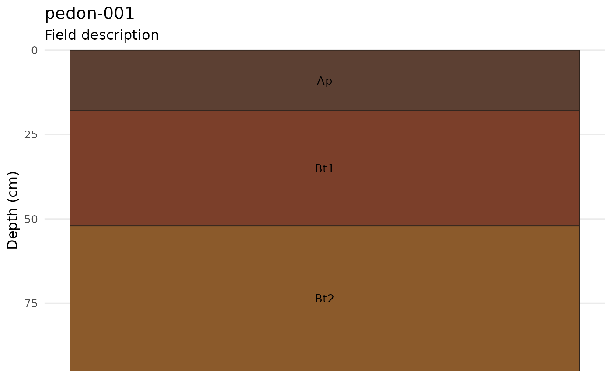

Plot a soil profile from a two-column field description table
Source:R/plot.R
plot_soil_description.RdPlot a soil profile from a two-column field description table
Arguments
- data
A data frame with
Depthanddescriptioncolumns.- site_id
Profile identifier. Defaults to
"soil-profile".- profile_bottom
Optional terminal depth in centimeters. Required when
Depthcontains top depths rather than depth ranges.- classification
A named list describing the classification system and taxon.
- metadata
A named list with arbitrary profile metadata.
Examples
# \donttest{
field_notes <- data.frame(
Depth = c("0-18 cm", "18-52 cm", "52-95 cm"),
description = c(
"Ap dark brown silt loam moist clear smooth",
"Bt1 reddish brown clay loam slightly moist gradual wavy",
"Bt2 brown clay dry diffuse irregular"
)
)
plot_soil_description(field_notes, site_id = "pedon-001")

# }